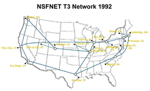

Terminology and History
n the 1960s, computer scientists began developing systems for time-sharing of computer resources. J. C. R. Licklider proposed the idea of a universal network while working at Bolt Beranek & Newman and, later, leading the Information Processing Techniques Office (IPTO) at the Advanced Research Projects Agency (ARPA) of the United States Department of Defense (DoD). Research into packet switching, one of the fundamental Internet technologies, started in the work of Paul Baran at RAND in the early 1960s and, independently, Donald Davies at the United Kingdom's National Physical Laboratory (NPL) in 1965. After the Symposium on Operating Systems Principles in 1967, packet switching from the proposed NPL network and dynamic routing concepts proposed by Baran were incorporated into the design of the ARPANET, an experimental resource sharing network proposed by ARPA. ARPANET development began with two network nodes which were interconnected between the University of California, Los Angeles (UCLA) and the Stanford Research Institute (now SRI International) on 29 October 1969. The third site was at the University of California, Santa Barbara, followed by the University of Utah. In a sign of future growth, 15 sites were connected to the young ARPANET by the end of 1971. These early years were documented in the 1972 film Computer Networks: The Heralds of Resource Sharing.[30] Thereafter, the ARPANET gradually developed into a decentralized communications network, connecting remote centers and military bases in the United States.[31] Other user networks and research networks, such as the Merit Network and CYCLADES, were developed in the late 1960s and early 1970s. Early international collaborations for the ARPANET were rare. Connections were made in 1973 to Norway (NORSAR and NDRE), and to Peter Kirstein's research group at University College London (UCL), which provided a gateway to British academic networks, forming the first internetwork for resource sharing.[34] ARPA projects, the International Network Working Group and commercial initiatives led to the development of various protocols and standards by which multiple separate networks could become a single network or "a network of networks".[35] In 1974, Vint Cerf at Stanford University and Bob Kahn at DARPA published a proposal for "A Protocol for Packet Network Intercommunication". [36] They used the term internet as a shorthand for internetwork in RFC 675,[14] and later RFCs repeated this use. Cerf and Kahn credit Louis Pouzin with important influences on the resulting TCP/IP design.[36][37] National PTTs and commercial providers developed the X.25 standard and deployed it on public data networks.[38] Access to the ARPANET was expanded in 1981 when the National Science Foundation (NSF) funded the Computer Science Network (CSNET). In 1982, the Internet Protocol Suite (TCP/IP) was standardized, which facilitated worldwide proliferation of interconnected networks. TCP/IP network access expanded again in 1986 when the National Science Foundation Network (NSFNet) provided access to supercomputer sites in the United States for researchers, first at speeds of 56 kbit/s and later at 1.5 Mbit/s and 45 Mbit/s.[39] The NSFNet expanded into academic and research organizations in Europe, Australia, New Zealand and Japan in 1988–89.[40][41][42][43] Although other network protocols such as UUCP and PTT public data networks had global reach well before this time, this marked the beginning of the Internet as an intercontinental network. Commercial Internet service providers (ISPs) emerged in 1989 in the United States and Australia.[44] The ARPANET was decommissioned in 1990.[45] T3 NSFNET Backbone, c.1992 Steady advances in semiconductor technology and optical networking created new economic opportunities for commercial involvement in the expansion of the network in its core and for delivering services to the public. In mid-1989, MCI Mail and Compuserve established connections to the Internet, delivering email and public access products to the half million users of the Internet.[46] Just months later, on 1 January 1990, PSInet launched an alternate Internet backbone for commercial use; one of the networks that added to the core of the commercial Internet of later years. In March 1990, the first high-speed T1 (1.5 Mbit/s) link between the NSFNET and Europe was installed between Cornell University and CERN, allowing much more robust communications than were capable with satellites.[47]br  Later in 1990, Tim Berners-Lee began writing WorldWideWeb, the first web browser, after two years of lobbying CERN management. By Christmas 1990 , Berners-Lee had built all the tools necessary for a working Web: the HyperText Transfer Protocol (HTTP) 0.9,[48] the HyperText Markup Language (HTML), the first Web browser (which was also an HTML editor and could access Usenet newsgroups and FTP files), the first HTTP server software (later known as CERN httpd), the first web server,[49] and the first Web pages that described the project itself. In 1991 the Commercial Internet eXchange was founded, allowing PSInet to communicate with the other commercial networks CERFnet and Alternet. Stanford Federal Credit Union was the first financial institution to offer online Internet banking services to all of its members in October 1994.[50] In 1996, OP Financial Group, also a cooperative bank, became the second online bank in the world and the first in Europe.[51] By 1995, the Internet was fully commercialized in the U.S. when the NSFNet was decommissioned, removing the last restrictions on use of the Internet to carry commercial traffic. Worldwide Internet users[53] 2005 2010 2017 2023 World population (billions)[54] 6.5 6.9 7.4 8.0 Worldwide 16% 30% 48% 67% In developing world 8% 21% 41.3% 60% In developed world 51% 67% 81% 93% As technology advanced and commercial opportunities fueled reciprocal growth, the volume of Internet traffic started experiencing similar characteristics as that of the scaling of MOS transistors, exemplified by Moore's law, doubling every 18 months. This growth, formalized as Edholm's law, was catalyzed by advances in MOS technology, laser light wave systems, and noise performance. Since 1995, the Internet has tremendously impacted culture and commerce, including the rise of near-instant communication by email, instant messaging, telephony (Voice over Internet Protocol or VoIP), two-way interactive video calls, and the World Wide Web[56] with its discussion forums, blogs, social networking services, and online shopping sites. Increasing amounts of data are transmitted at higher and higher speeds over fiber optic networks operating at 1 Gbit/s, 10 Gbit/s, or more. The Internet continues to grow, driven by ever-greater amounts of online information and knowledge, commerce, entertainment and social networking services.[57] During the late 1990s, it was estimated that traffic on the public Internet grew by 100 percent per year, while the mean annual growth in the number of Internet users was thought to be between 20% and 50%.[58] This growth is often attributed to the lack of central administration, which allows organic growth of the network, as well as the non-proprietary nature of the Internet protocols, which encourages vendor interoperability and prevents any one company from exerting too much control over the network.[59] As of 31 March 2011, the estimated total number of Internet users was 2.095 billion (30% of world population).[60] It is estimated that in 1993 the Internet carried only 1% of the information flowing through two-way telecommunication. By 2000 this figure had grown to 51%, and by 2007 more than 97% of all telecommunicated information was carried over the Internet.[61]